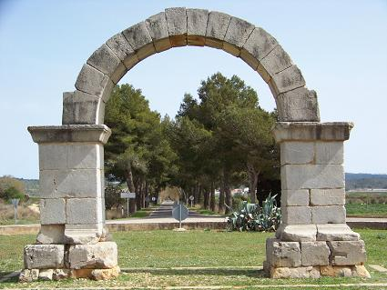
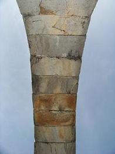

|
C A B A N E S
En esta localidad castellonense se han hallado
numerosos hallazgos como el poblado ibérico de La Ribera.
En sus inmediaciones se han hallado varios yacimientos de época neolítica.
Se tiene noticia de un poblado sumergido en el mar, junto a la Torre de la
Sal y es famosa la estela ibérica hallada en 1913 en El Pulido.
De época romana se han hallado en las inmediaciones de la población varios
fragmentos de lápidas, numerosos los hallazgos de cerámica y monedas
romanas en el Pla del´arc, extensa llanura de 24 kilómetros cuadrados que
toma el nombre del famoso arco que está en su centro.
Este arco está formado por dos pilares cuadrangulares, opus quadratum,
sobre los que se apoya un arco de medio punto compuesto de 14 dovelas; su
altura actual es de 5,8 metros y su luz de 4m, careciendo desde el siglo
XVII de enjutas y entablamento. Las seis dovelas centrales del arco tienen
unos agujeros de 10x5 cms. que servirán para sujetar los sillares del
entablamento, al cual pertenecen sin duda las piedras molduradas,
convertidas en abrevaderos, del inmediato "Pou de la Roca” y las siete
existentes en un edificio del "Carrer Nou" de Cabanes. En 1873 la Comisión
Provincial de Monumentos de Castellón, para garantizar su mejor
conservación, desvió el camino que pasaba por debajo de él, hizo
pavimentar su base y colocó los catorce pilones.
|
 |
 |
Se cree que su construcción es del siglo II; en
base al hallazgo al pie del mismo de terra sigillata y varias monedas de
esta época, además de su semejanza con otros monumentos coetáneos. Se cree
que es un monumento funerario de carácter privado; relacionado con una
Villa agrícola cercana a la Vía Augusta.
Todo parece indicar que Cabanes fue fundada en la época romana como una
mansión de la vía Augusta hoy Cami del romans, con el nombre de Ildum.
La noticia más antigua que sobre él se conoce es del año 1243 en que lo
cita la Carta Puebla como deslinde.
Finalmente fue declarado Monumento Histórico-Artístico perteneciente al
Tesoro Artístico Nacional por decreto el día 3 de junio de 1931.
|